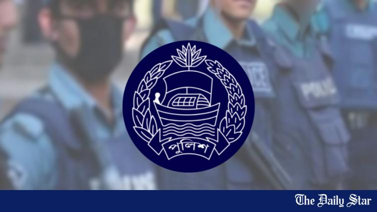

Last July, BNP leader Salahuddin Ahmed said his party wanted the viva marks of the Bangladesh Civil Service (BCS) examination reduced to 50 from 200 to limit scope for discrimination in Bangladesh Public Service Commission (BPSC) recruitment.
Differences in school attendance, child labour, stipend incentives and study routines are widening the performance gap between male and female students in the Secondary School Certificate (SSC) and equivalent examinations, according to educationists, teachers and candidates.
Since the late 1980s, Bangladesh’s SSC pass rate has seen major fluctuations, reflecting not only student performance but also suggesting the influence of political realities, exam reforms, marking practices, and education policies.
This year’s SSC results painted a grim picture, with the pass rate across the nine general education boards hitting a 19-year low and GPA-5 achievers falling to their lowest level since 2020.
The Madrasah Education Board recorded its lowest pass rate in 23 years at 55.49 percent, while the Technical Education Board posted a 19-year low of 58.20 percent in this year’s SSC and equivalent examinations, according to education ministry data.
The primary and mass education ministry has prepared draft guidelines for updating the primary curriculum, suggesting an approach that defines what children should know and the skills and competencies they should attain by the end of class-5.
The BNP-led government flagged education as a priority in its first 100 days, unveiling plans for curriculum revision, compulsory sports from Class IV, free uniforms, midday meals and a commitment to raise education spending to 5 percent of GDP.
A government consultation committee has recommended limiting SSC exams to five core subjects -- Bangla, English, mathematics, science, and social science -- while keeping PSC and JSC exams in classes 5 and 8 scrapped.
Primary schoolchildren across the country received full sets of new textbooks yesterday, but about a quarter of secondary-level textbooks did not reach the schools, leaving millions of students without complete sets on the first day of the academic year.
The pass rate in this year’s Secondary School Certificate (SSC) examinations across all nine general education boards has dropped to 68.04 percent, the lowest in 16 years.
At least 20 persons were injured yesterday in an attack on an indigenous group and its supporters protesting the removal of a graffiti from textbooks featuring the word “indigenous” (adivasi, in Bangla).
Let us begin with a generic scenario to explain the quandary of a 10th grader in Bangladesh in 2025. Due to take the SSC examinations in a year, this student will have to choose between science, humanities and commerce streams.
With students now on their Ramadan and Eid holiday, Wahiduddin, on his final day as adviser yesterday, once again promised that the books would be delivered by March 10.
Bangla and English textbooks for primary and secondary educational institutions are set to see some major changes, including the dropping of some contents related to Bangabandhu Sheikh Mujibur Rahman.
No secondary school student will get full sets of textbooks on the first day of the next academic year. At the primary level, only about half of the students will get the full sets on January 1.
The government is racing against time to print the textbooks for free distribution among primary and secondary school students on January 1, 2025 – the first day of the upcoming academic year.
Education experts have urged the government not to concede to students’ demands for automatic passes and result re-evaluations, terming such demands illogical, unacceptable, and with far-reaching consequences.
Some experts feel that students who passed this year’s Higher Secondary Certificate (HSC) and equivalent exams are entering higher education with a significant learning gap after exemption from nearly half of their tests.

2024-10-17ReportingGovernance & public institutions
The Police Headquarters has recommended suspending the recruitment process for all 310 police cadre posts from the 44th to 47th Bangladesh Civil Service (BCS) examinations.
Despite an overall decline in the pass rate for this year’s Higher Secondary Certificate (HSC) and equivalent examinations, the Madrasa Board has emerged as the top-performing board among all education boards
The government has decided to remove any “exaggerated” historical information or “unnecessary” glorification of any individuals from textbooks for the upcoming academic year, officials of the National Curriculum and Textbook Board (NCTB) have said.
Despite government efforts to promote a new curriculum focusing on critical thinking, guide books aligned with the old memorisation-based approach continue to dominate book markets.
The National Curriculum Coordination Committee (NCCC) finalised the evaluation process in summative assessment under the new curriculum at a meeting yesterday.
One and a half years after it was launched, implementation of the new curriculum at schools is still in a shambles as the authorities are yet to finalise a method of evaluating the students.
Girls have done better than boys in terms of pass rate in the SSC exams eight years in a row, and they have also outdone boys in achieving GPA-5 for seven consecutive years.
After witnessing two consecutive years of record numbers of GPA-5 achievers from the technical board, this year’s Secondary School Certificate (SSC) exam saw the lowest number of GPA-5 achievers from the board in 12 years.
While an overall decline in the pass rate and number of GPA-5 holders marked this year’s Higher Secondary Certificate and equivalent examinations, the Technical Education Board has emerged as the top-performing board.
The pass rate in this year's HSC examinations has dropped to 75.90 percent from last year's 84.31, while the number of students with a GPA-5 has halved from last year's 1,59,755
The success rate in this year’s SSC and equivalent exams has hit a 13-year low mainly due to poor performances in mathematics and bad results in Sylhet board due to floods in that region, officials said.
The National Curriculum and Textbook Board has been stuck in the loop of controversies centring on school textbooks with academics and some NCTB officials blaming it on the negligence of writers and editors, insufficient training and lack of serious punishment for blunders.
Thousands of students of Rajshahi University (RU), who were expecting to sit for their final examinations on university campus, are in uncertainty due to the lockdown imposed in Rajshahi.
Students of Rajshahi University (RU) have urged authorities to reopen dormitories, ensuring health guidelines, during the honours and master’s final examinations, which are scheduled to start from January 2.
During an exam for second semester students in September, the teachers of Rajshahi Polytechnic Institute noticed, to their astonishment, that some of the students were whiling away the hours.